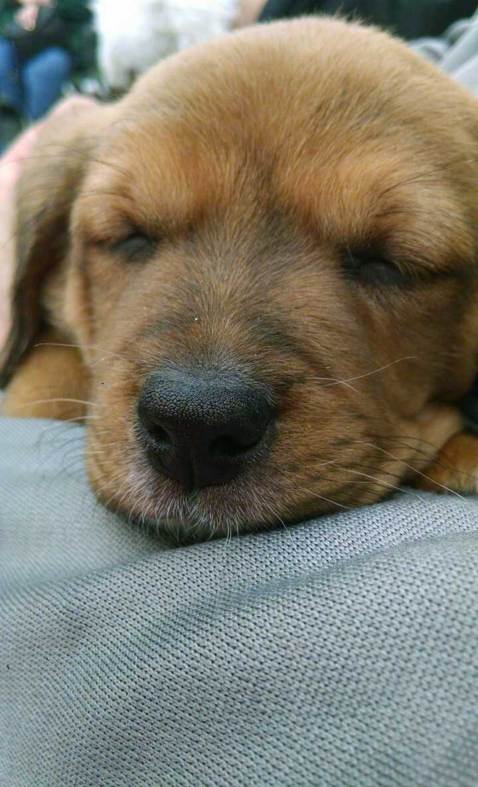
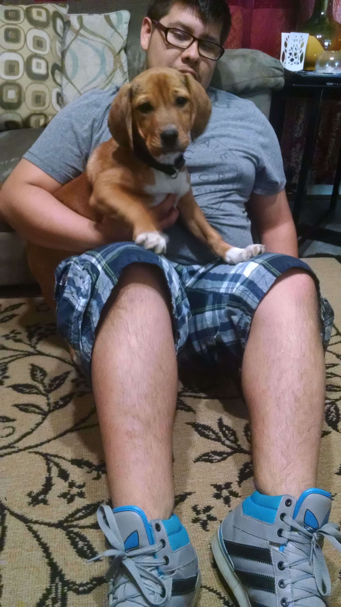

Hello,
This is Casey. My adventure with her began a day coming back from school. I noticed there was a poster with
the words "Free Puppies." written in marker. After getting back home something inside of me said 'go back and
See what the puppies looked like.' As I drove there I knew I was in a good position to take a puppy home if I wanted too.
It was when I walked to the circled fence that I fell in love with Casey. She was the weird one away from the other puppies,
I thought she was unique.

After I brought her home I noticed she liked to wonder, she was curious on what was behind the doors and loved most of all,
getting attention from my family and visitors. Since that day she has been by my side and has brought positivity and many laughs.
I knew that she was going to be very energetic and she sure was. I got in the habit of taking her on walks and over the next fews
I had very few nights of constant 8 hours of sleep. I am not going to lie I was tired, but with every decision there are always
consequences. As she grew older she got to be apart of the family and even got along with my sister's chihuahua.
Casey has brought a lot of love into my family, but also a lot of worries. One night after coming back from work I noticed Casey
was in the back yard behind our shed. As I called her name she didn't move. She stood there and stared at me. As I walked to her I knew
Something was wrong. I noticed she balance on three legs and then also noticed her fourth leg was wobbling in the air. After having a difficult
keeping her calm in the car and taking her to the emergency hospital. I could see the tears coming from her eyes. The same night
I check my security cameras to find out she had jumped off the tall table in our dock and landed bad. After many failed attempts
from trying to put her hip back into place it always came out.

Dr. Jones recommended to have surgury and so we proceeded. It was very
difficult because she needed constant attention at night when she moved and also when she needed to potty. Never in my life did I ever
feel so much like in a father's role until that time. Even with the surgery the doctor feared that she could never put pressure on her foot
because of all of the muscle she had lost during the time of the accident till the surguery. Finally Casey was a fighter and after 3 months
she began to walk and adding a little more pressure and confidenced to her leg. Its been a year since her recovery and she runs and plays like
a normal dog now. I am thankful things went well. I could not imagine the pain and siffering she must of went through. I learned that in life
there are many ups and downs, but you always get through them day by day.
Dogs are a man's bestfriend and without them the world would feel a little more emptier. Therefore I say give your dog a kiss, a hug, or even a treat
because they bring so much love and energy to our routine lives.
For any questions, comments, and/or concerns on this site please feel free to contact Harold Burgos via
Email